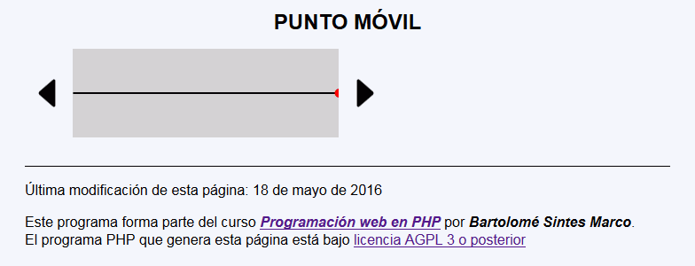

En este ejercicio se debe crear un programa que permita desplazar un punto a derecha e izquierda.
 La posición del punto se almacenará en una variable de sesión, no en un control oculto.
La posición del punto se almacenará en una variable de sesión, no en un control oculto.

Este código correspondería a la primera captura, con el punto en el centro.
<h1>Punto móvil</h1>
<p>
<a href="punto_movil.php?accion=izquierda">
<img src="arrow-left-b.svg" alt="izquierda" height="50" style="vertical-align: middle" /></a>
<svg version="1.1" xmlns="http://www.w3.org/2000/svg"
width="300px" height="100px" style="background-color: lightgray; vertical-align: middle">
<line x1="0" y1="50" x2="300" y2="50" stroke="black" stroke-width="2" />
<circle cx="150" cy="50" r="5" fill="red" />
</svg>
<a href="punto_movil.php?accion=derecha">
<img src="arrow-right-b.svg" alt="derecha" height="50" style="vertical-align: middle" /></a>
</p>